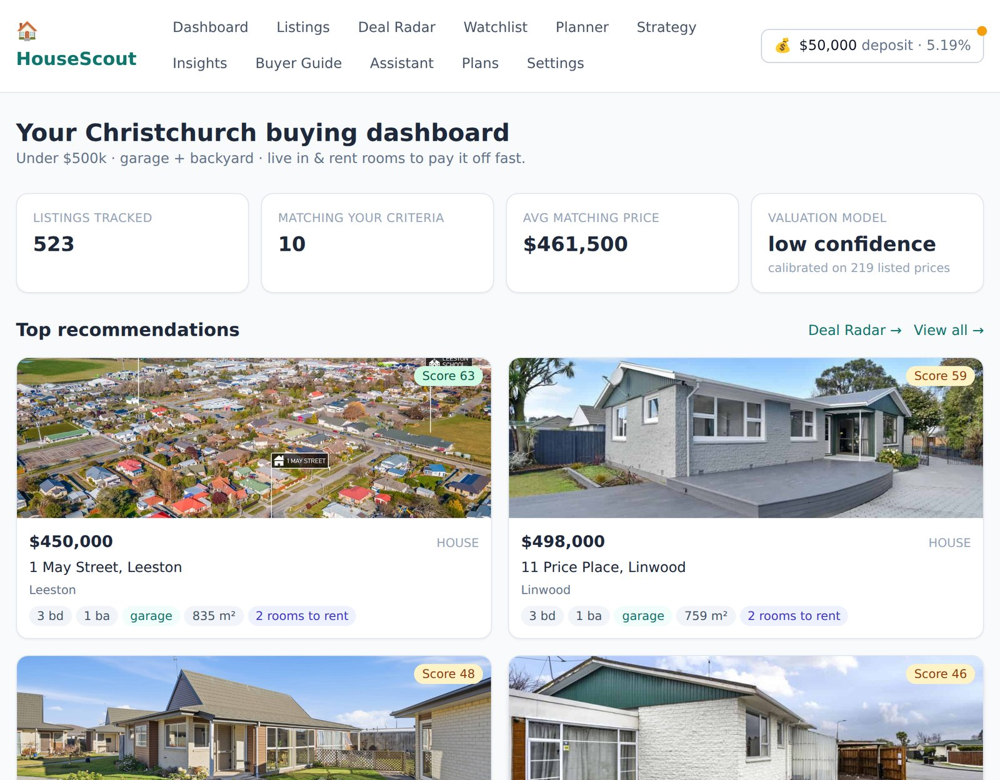

Live
Property Intelligence
Python · Local AI
HouseScout
A property-buying dashboard that helps Christchurch home buyers find affordable homes that match very specific criteria — and stay on top of the market without endlessly refreshing listing sites. Built for investment-minded buyers who want to "live in & rent rooms to pay it off fast."
Key features
- Listings tracker monitoring user-defined criteria
- Central dashboard with key metrics at a glance
- Searchable, filterable listings browser
- Indicative property valuations & estimates
- Market insights & analytics on matches
- Buying-journey planner
- Private local AI chat (powered by Gemma)
- Personalised settings & saved preferences
The value: turns a scattered, stressful search into a focused, data-driven workflow — surfacing sub-$500k homes with the right features (garage, backyard) so first-home buyers and investors can move fast and buy with confidence. Estimates are indicative, not registered valuations — and not financial advice.
